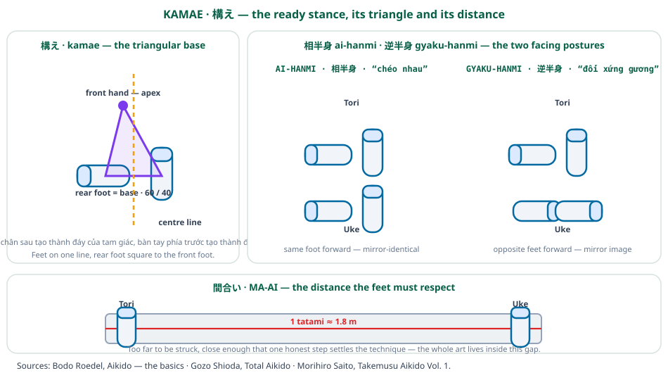

Ma-ai và De-ai
Aikido có hai từ riêng cho hai nửa của điều mà quần vợt gọi là vị trí trên sân. Ma-ai là khoảng cách giữa bạn và đối thủ. De-ai là khoảnh khắc hai bên gặp nhau. Cái đầu là hình học và cái sau là thời gian, và cả hai được quyết định bởi đôi bàn chân thay vì đôi tay. Bài này đi theo thứ tự đó rồi ráp chúng lại với nhau.

Hai từ, một vấn đề
Tiếng Anh gộp cặp này thành một ý niệm duy nhất là “khoảng cách”, và mất mát điều gì đó khi làm vậy. Giữ chúng tách ra buộc phải đặt một câu hỏi: vấn đề là bạn đang đứng sai chỗ, hay bạn đến sai lúc? Hai điều đó có cách sửa khác nhau, và lẫn lộn chúng là lý do thường gặp khiến việc tập luyện chững lại.
Học viên luôn ở quá gần được bảo hãy di chuyển; học viên luôn đến muộn được bảo hãy di chuyển sớm hơn. Chỉ một trong hai là vấn đề ma-ai.
Ma-ai: khoảng cách
Ma-ai nghĩa đen là khoảng hở (ma) của vị trí tương hỗ (ai). Nó là khoảng trống nơi cuộc chạm trán diễn ra, và các nguồn coi nó như điều bạn chọn và giữ thay vì điều xảy ra với bạn.
Thuộc tính then chốt là ma-ai được đo bằng bước chân, không phải bằng mét. Câu hỏi thực hành không bao giờ là “anh ta ở xa bao nhiêu” mà là “anh ta cách mấy bước của tôi”. Đó là lý do bộ pháp và khoảng cách là cùng một chủ đề trong truyền thống này: đổi chiều dài bước chân là bạn đã đổi ma-ai mà không bên nào di chuyển.
Một tấm tatami
Shioda đưa ra thước đo một cách cụ thể. Khoảng cách tập luyện được bàn tới theo tatami, và một tấm chiếu tatami dài khoảng một phẩy tám mét — chừng một chiều dài thân thể cộng một sải bước. Hệ quả hữu dụng là ma-ai có một đơn vị, và đơn vị ấy gần với quãng đường mà một bước cam kết duy nhất bao phủ.
Vì vậy các khoảng cách làm việc là những số nguyên nhỏ: một bước, hai bước. Không có khoảng cách nào trong aikido đòi năm bước để vượt qua, bởi một sự vượt qua dài đến thế không phải là vượt qua, mà là đuổi theo. Bất cứ điều gì vượt quá khoảng hai bước là ở bên ngoài cuộc giao chiến và phải được thiết lập lại trước khi kỹ thuật có thể xảy ra.
De-ai: thời điểm
De-ai là sự gặp gỡ — khoảnh khắc hai ý đồ tới cùng một chỗ. Nếu ma-ai là ở đâu, thì de-ai là khi nào.
Hệ quả về bộ pháp là de-ai không thể sửa bằng cách đổi vị trí. Nếu bạn ở đúng chỗ vào sai lúc, việc bước sang chỗ khác không giúp gì; điều cần là bắt đầu bước sớm hơn, hoặc làm bước ngắn hơn để nó hoàn thành sớm hơn. Các nguồn coi đây là lý do để giữ các bước nhỏ: một bước nhỏ hoàn thành nhanh, điều đó mở rộng cửa sổ mà trong đó de-ai có thể đúng.
Đây là điểm mà hai nửa ráp lại. Bởi ma-ai được đếm bằng bước và de-ai bị chi phối bởi việc một bước hoàn thành nhanh đến đâu, biến số duy nhất nằm dưới cả hai là chiều dài bước. Bước ngắn hơn cho sự kiểm soát khoảng cách tinh hơn và hoàn thành thời điểm nhanh hơn. Đó là toàn bộ lập luận cho bước nhỏ, và cả hai nửa của cặp này đều chỉ vào nó.
Trên sân
1. Tách hai chẩn đoán. Khi người chơi bị một quả bóng đánh bại, hãy hỏi vị trí sai hay khởi phát muộn. Đó là hai bài tập khác nhau, và trộn lẫn chúng là lý do người chơi tập chăm chỉ vào bài sai.
2. Đếm khoảng cách bằng bước. Đo vị trí trên sân bằng bước chân của chính mình thay vì bằng mét làm cho con số nhỏ và có thể hành động. “Thiếu một bước” là một phát biểu có thể sửa; “thiếu nửa mét” thì không.
3. Rút ngắn bước để mua thời gian. Bởi một bước nhỏ hoàn thành sớm hơn, rút ngắn bước hồi phục mua được thời gian mà không mất gì về vị trí. Đây là sự chuyển giao trực tiếp nhất từ de-ai sang bộ pháp quần vợt.
Sách nguồn
Gozo Shioda, Total Aikido — ma-ai được bàn theo tatami, một tấm khoảng 1,8 m, và tỷ lệ trọng lượng sáu mươi-bốn mươi làm cho bước đi sẵn sàng: aikido_total_aikido_vi
Bodo Roedel, Aikido — Những Điều Cơ Bản (Aikido — the basics) — kamae, thế chuẩn bị từ đó khoảng cách được đánh giá: aikido_roedel_basics_vi
Đối chiếu với Advanced Aikido (Phong Thong Dang & Lynn Seiser) về khoảng cách và nhập thân: aikido_advanced_vi
Mọi trích dẫn được dịch từ bản dịch tiếng Việt của các ấn bản này. Hình minh họa là tác phẩm gốc làm cho Dự án Nghiên cứu Bộ pháp TFL.
← Tai Sabaki - Đường đi của hông | Dự án nghiên cứu TFL | Bộ pháp vũ khí - Điều mà kiếm và gậy dạy cho đôi bàn chân →